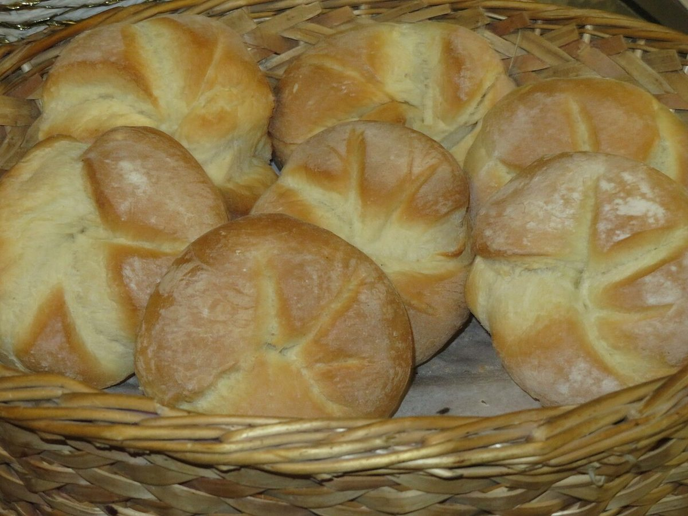

STROKE 4 / 4 · EXHAUST
排気はいき
ひと巡りしたら、いよいよ場所のご案内です。
所在地・ご案内
| 所在地 | 〒050-0085 北海道室蘭市輪西町1丁目36-12 |
|---|---|
| 電話 | なし |
| 営業時間 | 準備中 |
| 定休日 | 準備中 |
| ご予約 | 準備中 |
| 駐車場 | 準備中 |
| SNS | Instagram @enjin_bagle |

地図
地図は所在地の住所をもとに表示しています。営業時間・定休日はInstagramなどでご確認ください(現在準備中)。
STROKE 4 / 4 · EXHAUST
ひと巡りしたら、いよいよ場所のご案内です。
| 所在地 | 〒050-0085 北海道室蘭市輪西町1丁目36-12 |
|---|---|
| 電話 | なし |
| 営業時間 | 準備中 |
| 定休日 | 準備中 |
| ご予約 | 準備中 |
| 駐車場 | 準備中 |
| SNS | Instagram @enjin_bagle |

地図は所在地の住所をもとに表示しています。営業時間・定休日はInstagramなどでご確認ください(現在準備中)。